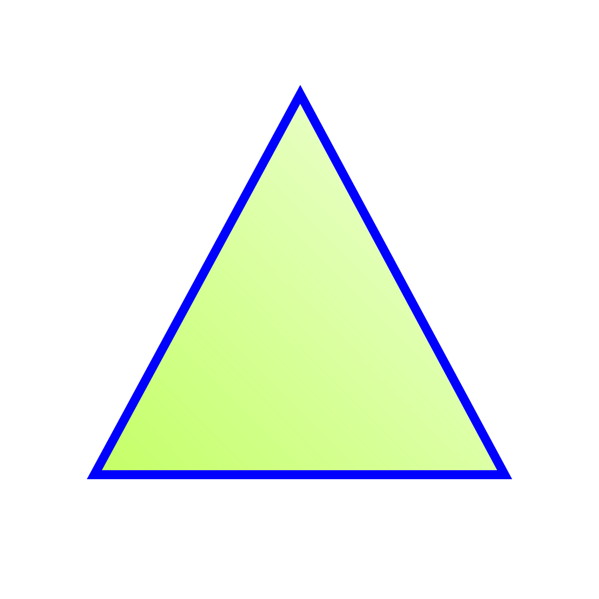

Triangulo equilatero
Triangulo equilatero
Un triángulo equilátero es un triángulo con tres lados de igual longitud
y tres ángulos iguales. Cada ángulo en un triángulo equilátero mide 60 grados.
Es considerado un polígono regular debido a esta propiedad de tener lados
y ángulos iguales.
Características principales:
Lados iguales: Todos los tres lados del triángulo tienen la misma medida.
Ángulos iguales: Los tres ángulos internos son congruentes, cada uno midiendo 60 grados.
Simetría: Posee tres ejes de simetría, cada uno conectando un vértice con el punto medio del lado opuesto.
Regularidad: Debido a sus lados y ángulos iguales, es un polígono regular.
